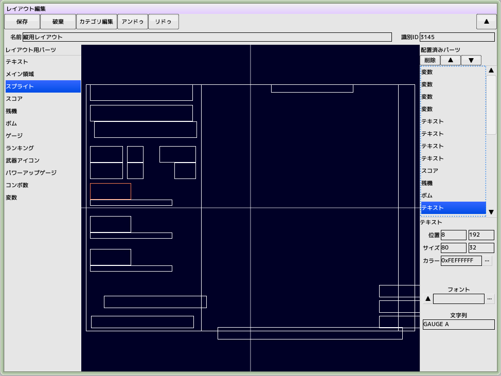
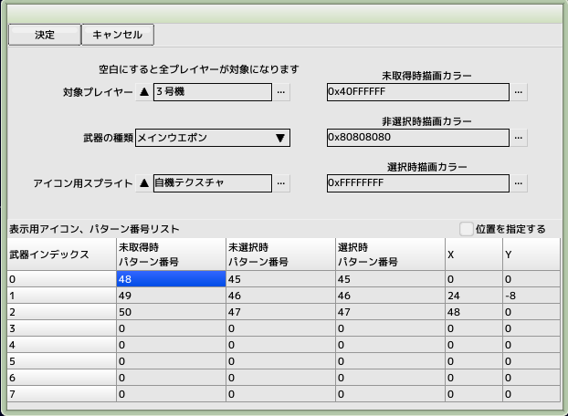
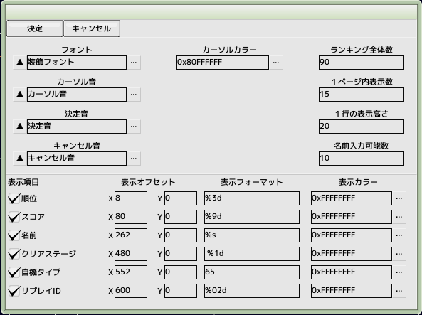

■元のページへ戻る
■元のページへ戻る

- レイアウト用パーツ
ここから配置したいパーツを選択して中央部へドラッグ＆ドロップします
- 配置済みパーツ
すでに配置してあるパーツリストです。選択したパーツの詳細情報が下部へ表示され、編集が可能です
- プレビュー
配置してあるパーツの位置とサイズが表示されます
フォントを指定する箇所で何も指定しなかった場合はデフォルトフォントで表示します
- テキスト
文字列を指定したフォントで表示します
- メイン領域
実際のプレイ内容を表示する領域です。必ず一つは配置してください
- スプライト
指定したスプライトを表示します。パターン、アニメ番号を指定します
- スコア
スコアを指定したフォントで表示します。
- 残機
自機の残り数を指定したフォントで表示します
- ボム
ボムの残り数を指定したフォントで表示します
- ゲージ
プレイヤー用のゲージやボスHPゲージを描画します。登録したスプライトでパターン、アニメ番号を使用してゲージを描画します
- ランキング
ランキングシーンでランキング一覧を表示するためのパーツ。詳細設定で内容を編集します
- 武器アイコン
プレイヤー用武器のアイコンを表示します。詳細設定で内容を編集します
- パワーアップパネル
プレイヤー用パワーアップパネルを表示します。プレイヤー編集内のパワーアップパネルも併せて必要です
- コンボ数
コンボ数を指定したフォントで表示します
- 変数
変数の内容を指定したフォントで表示します
武器アイコン詳細設定

- 対象プレイヤー
特定のプレイヤーのみ適用する場合に設定してください
- 武器の種類
どの武器を対象にするかを指定してください
- アイコン用スプライト
表示用
- カラー
描画用のカラーをARGB32ビットで指定します
- パターン番号リスト
各種アイコンのパターン番号
- 位置を指定する
リスト内のXYが有効になります
ランキング詳細設定

- フォント
ランキングを表示するためのフォント
- カーソル音
カーソルが移動するときのサウンド
- 決定音
決定時のサウンド
- キャンセル音
キャンセル時のサウンド
- カーソルカラー
描画用のカラーをARGB32ビットで指定します
文字列の上から描画するので半透明にしてください
- ランキング全体数
１ページに収まらない場合はページ切り替えになります。最大100
- １ページ内表示数
画面内に収まるようにしてください
- １行の表示高さ
フォントサイズ＋行間をピクセル単位で指定します
- 名前入力可能数
文字数
表示項目
- 順位
通し番号
- スコア
最終スコア
- 名前
入力した名前、未入力時はゲーム設定のデフォルト文字列が表示されます
- クリアステージ
ゲーム設定のシーンタブ、メインステージ内のインデックス
- 自機タイプ
ゲーム設定のプレイヤータブ、プレイヤーリスト内のインデックス
表示フォーマットの65はASCIIコードの’A'になります。
- リプレイID
保存ファイル名に使用されます
- 付加情報ABC
スクリプトで指定された情報
表示フォーマットの65はASCIIコードの’A'になります。
■ページ上部へ戻る